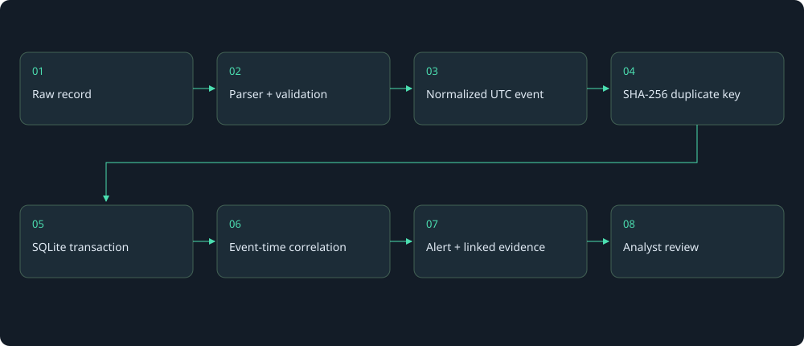

How LogSentinel works
Project guide · Technical design
LogSentinel turns authentication records into explainable review signals. I use one local service so visitors can reproduce the complete flow without building a lab.

1. Start with actual source records
Linux example, from the SSH success-after-failures scenario:
2026-10-26T10:40:00Z app-02 sshd[6000]: Failed password for devops from 198.51.100.24 port 52000 ssh2
Windows example, from the repeated-logon-failures scenario:
{
"System": {
"EventID": 4625,
"TimeCreated": {
"SystemTime": "2026-10-26T10:25:00Z"
},
"Computer": "dc-01",
"EventRecordID": "10000",
"Channel": "Security"
},
"EventData": {
"TargetUserName": "svc_backup",
"TargetDomainName": "LAB",
"IpAddress": "192.0.2.86",
"LogonType": "10"
}
}
Both are synthetic records from the distributed samples. They are not evidence of a real incident. See Linux sample and Windows sample.
2. Parse fields before drawing conclusions
The Linux parser recognizes the timestamp, host, daemon, outcome, method, account, address, PID, and source port. It treats unrelated daemon messages as ignored records.
| Linux source fragment | Normalized destination | Actual value |
|---|---|---|
| Prefix timestamp | timestamp |
2026-10-26T10:40:00.000000Z |
| Host after timestamp | host |
app-02 |
Failed password |
event_type, metadata.method |
ssh_failure, password |
for devops |
user |
devops |
from 198.51.100.24 |
source_ip |
198.51.100.24 |
sshd[6000], port 52000 |
metadata.pid, metadata.source_port |
6000, 52000 |
The Windows parser reads named fields instead of localized message text. Explicit channel and provider values must match the Security contract.
| Windows source field | Normalized destination | Actual value |
|---|---|---|
System.TimeCreated.SystemTime |
timestamp |
2026-10-26T10:25:00.000000Z |
System.Computer |
host |
dc-01 |
System.EventID = 4625 |
event_type |
windows_failure |
EventData.TargetUserName |
user |
svc_backup |
EventData.IpAddress |
source_ip |
192.0.2.86 |
EventData.TargetDomainName |
metadata.domain |
LAB |
EventData.LogonType |
metadata.logon_type |
10 |
System.EventRecordID |
metadata.record_id |
10000 |
System.Channel |
metadata.channel |
Security |
Microsoft's 4625 reference shows the Security channel and expected provider. A 4625 is a failed logon, not necessarily a wrong password. The current normalized schema does not extract Status or SubStatus; inspect raw records if those fields exist.
The actual demo omits Provider. Compatibility permits that omission, but it cannot verify the source. A file can be fabricated even when every declared field matches. See the source-validation contract.
3. Normalize time and identity fields
I store UTC timestamps with fixed microsecond precision. Lexical ordering then agrees with event-time ordering across timezone offsets.
For the same Linux instant, 2026-10-26T13:40:00+03:00 and 2026-10-26T10:40:00Z normalize to 2026-10-26T10:40:00.000000Z. The offset form is an equivalent representation, not another demo record.
Yearless syslog uses the explicit import year and fixed timezone offset. It cannot infer a New Year boundary or daylight-saving transition. Split such files before import.
IP parsing canonicalizes IPv6 and converts IPv4-mapped IPv6 to IPv4. Invalid SSH IPs reject the record. Missing Windows IPs remain null and cannot join a network correlation group.
Linux usernames retain case. Windows matching case-folds account, host, and domain names. The stored Windows account/domain spelling remains available for inspection. Sudo uses the invoking user, not the PAM target account.
Actual normalized Linux event:
{
"id": "3b9fef79c1d8d48835c4ee66b1a113f80b46632d18c094ca4da2298bf2dcf99f",
"timestamp": "2026-10-26T10:40:00.000000Z",
"source": "linux",
"event_type": "ssh_failure",
"host": "app-02",
"user": "devops",
"source_ip": "198.51.100.24",
"metadata": {
"pid": "6000",
"method": "password",
"source_port": "52000"
}
}
Actual normalized Windows event:
{
"id": "6bb005c60c226288fef11682a946243c9d3f9b71dc6191b6bca769d08e46fc80",
"timestamp": "2026-10-26T10:25:00.000000Z",
"source": "windows",
"event_type": "windows_failure",
"host": "dc-01",
"user": "svc_backup",
"source_ip": "192.0.2.86",
"metadata": {
"event_id": 4625,
"record_id": "10000",
"channel": "Security",
"domain": "LAB",
"logon_type": "10"
}
}
4. Identify duplicates
Event.id hashes normalized time, source, type, host, user, IP, and metadata using SHA-256. Raw formatting and upload filename do not participate.
Equivalent Windows XML and JSON exports produce the same ID when their normalized fields match. Provider validation does not add provider metadata to the identity. This preserves compatibility with previously imported valid events.
This hash is a deduplication key, not source authentication, a digital signature, or proof that an imported file was unchanged. Identical normalized records can collapse even if they describe separate attempts. Missing optional fields across exports can prevent deduplication.
The first imported raw representation and filename are retained. LogSentinel does not maintain a multi-file provenance history.
5. Commit events and detections together
SQLite storage uses the event ID as a primary key. INSERT OR IGNORE prevents a duplicate event from creating a second row.
An import transaction inserts events, checks the local event cap, reanalyzes stored data, updates alerts, and commits. Failure rolls back the operation. WAL permits reads while writes serialize.
The measured demo contains 85 unique events. A second import reports 85 duplicates, zero inserted events, and five total alerts. It does not add five more alerts.
6. Correlate using event time
Event time comes from the log. Import time is when the file reaches the application. I use event time so files loaded out of order can still form the same sequence.
The schema does not store a separate import timestamp. It stores the display filename. The dashboard's latest-event label does not describe upload recency.
| Event family | Effective correlation key | Why these fields matter |
|---|---|---|
| SSH | Host + source IP + user | Keep different destinations, origins, and accounts separate |
| Windows | Host + IP + user + domain + logon type | Separate authentication contexts with similar account names |
| Sudo | Host + invoking user + terminal | Keep distinct local sessions separate |
Missing key fields do not join a shared "unknown" identity. That avoids false joins but reduces coverage for incomplete data.
The detection engine sorts events and applies a bounded event-time window. Failures at the lower boundary qualify. Success rules require strictly earlier failures. They do not reuse consumed failures for every later success.
Five scenario documents show actual evidence, thresholds, normal explanations, and coverage gaps. Spraying across accounts and attempts distributed across IPs are not aggregated.
7. Explain the alert and inspect evidence
The SSH example belongs to four failures and one later success. The success threshold is three failures; the separate failure-only threshold is five. It produces one critical success-after-failures alert with five evidence records.
The Windows example belongs to six matching 4625 records. The failure threshold is five. It produces one high-severity alert with six evidence records.
Alert severity is a rule label, not a confidence score. Investigation guidance uses actual evidence counts and parameters stored with the alert. Legacy alerts use the config that was committed with their generation.
Open Security Alerts, select a detection, review the matching identity and parameters, then choose Inspect record. The raw and normalized record remain available. Analyst checks are suggestions; the app does not perform account validation or post-login analysis.
8. Reanalyze without implying an audit history
An import with new events replays the stored dataset. A settings change replays it in one transaction. A duplicate-only import skips replay because no event changed.
Existing investigation status survives when the alert ID remains present. Changed anchors or temporarily removed alerts can lose their status. Restoring thresholds can recreate an alert as new, even if the ID returns. There is no permanent case history.
Code and reproducible evidence
- Parsers and event ID
- Correlation and rule parameters
- SQLite transactions
- HTTP API
- Parser tests and Windows source tests
- Correlation tests and API tests
- Documented-example verifier and example tests
From the repository root, run python tools/verify_examples.py and python -m pytest. Both use disposable test databases. The SSH case study separates observations from hypotheses.